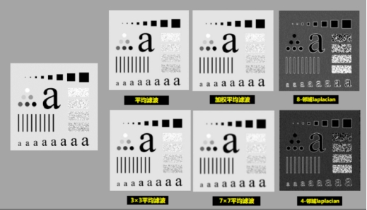
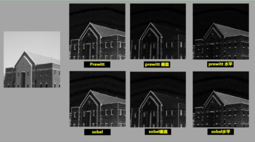

图像空间滤波工具主要用来对输入图像进行滤波操作，目的是对图像进行增强，以强调图像中感兴趣信息，而抑制图像中的噪声信号。支持的滤波操作有低通滤波（平均滤波器和加权平均滤波器）、高通滤波（4邻域和8邻域高通滤波）、一阶边缘检测（Prewitt算子和Sobel算子）、二阶边缘检测（4-邻域Laplacian算子和8-邻域Laplacian算子）、高斯滤波、快速平均滤波（最大支持滤波器尺寸为9x9）。


| 分类 | 参数名称 | 参数描述 |
|---|---|---|
| 属性窗口 | 滤波器类型 |
低通滤波（平均滤波器和加权平均滤波器）、高通滤波（4邻域和8邻域高通滤波）、一阶边缘检测（Prewitt算子和Sobel算子）、二阶边缘检测（4-邻域Laplacian算子和8-邻域Laplacian算子）、高斯滤波、快速平均滤波。 |
| Sobel幅值缩放系数 | 用于Sobel滤波。它决定幅值的范围，系数越大，范围也越大，但是幅值大于255的会被截断。 | |
| 横向标准差 | 高斯滤波的横向标准差。 | |
| 纵向标准差 | 高斯滤波的纵向标准差。 | |
| 全图滤波 | 是否全图滤波。当滤波器类型选择快速平均滤波时，会出现全图滤波属性。 | |
| 滤波窗口行m | 滤波器卷积和的行的个数。 | |
| 滤波窗口列n | 滤波器卷积和的列的个数。 | |
| 开启并行运算 | 是否开启并行运算，选择是时，算法将开启OpenMp并行计算方式，可以提升计算速度，但可能出现耗时不稳定的情况，选择否时，算法将关闭OpenMp并行计算。 | |
| 线程数百分比 | 设置并行运算的线程数百分比，有效范围为 (0, 0.75]，对应表示(0%, 75%]百分比范围。 | |
| 图像窗口 | 选框GUI | 用于选择感兴趣的区域。 |
| 输入图像 | 本工具从数据链获取的输入图像。 | |
| 数据链 | 输入图像 | 需要进行的空间滤波的图像，同图像窗口输入图像参数。 |
| 二维线性变换 | 用于图像进行缩放平移的二维线性变换。 | |
| 高级界面 | 无 | 无 |
| 分类 | 参数名称 | 参数描述 |
|---|---|---|
| 监视窗口 | 输入图像 | 图像的长宽和像素大小。 |
| 输出图像 | 图像的长宽和像素大小。 | |
| 执行结果 | 工具执行结果。 | |
| 执行时间 | 工具执行时间。 | |
| 图像窗口 | 输出图像 | 进行空间滤波之后的输出结果，同监视窗口输出图像参数。 |
| 执行结果 | 显示工具执行结果，执行成功显示“OK”，执行失败显示“NG”，同监视窗口的执行结果参数。 | |
| 数据链 | 输入图像 | 进行滤波的源图像，同监视窗口输入图像参数。 |
| 输出图像 | 进行滤波之后的目标图像，同监视窗口输出图像参数。 |
低通滤波器也称为平滑滤波器，其能减弱或消除图像中的高频信号，但不影响低频信号，可以减少噪声，噪声一般为高频信息。
高通滤波器又称为锐化滤波器，其可增强图像的高频信息，即凸显图像的轮廓特征。
一阶边缘检测器对2-D梯度的一种离散近似。
二阶边缘检测器常用的为Laplacian算子，其是连续Laplacian算子的离散化描述。
滤波器的1-D零均值Gaussian滤波器的数学表示为 其中为Gaussian的宽度控制参数。
2-D零均值Gaussian滤波器为 该滤波器如图5所示。
卷积是一种邻域操作，每个像素的输出是输入邻域像素的加权和。图像的线性滤波是通过卷积（convolution）操作完成的。权值矩阵称为卷积核（convolution kernel），也称为滤波器（filter）。
相关（correlation）和卷积非常相似，输出像素灰度级也是邻域像素的加权和。差异在于：在相关计算前不对权值矩阵旋转180度，并将该权值矩阵称为相关核。
计算原理如下图所示（相关核中心直接和图像像素（1,3）重合，权值和对应像素灰度级相乘并求和，结果为585。
在图像卷积中，若卷积核尺寸为n x n，当卷积核中心到图像边界位置小于(n - 1) / 2，将有部分卷积核权值对应的图像像素在图像之外，如图7所示。常用的边界填充方法有：（1）零值填充：将边界以外的像素用零值进行填充。（2）近邻复制：复制图像最边界的像素灰度级。图像滤波工具中缺省为近邻复制填充策略。
常用的滤波器都是以相关核的形式给出。不同滤波器对应的相关核（权值矩阵）如下图所示：
无
参见“\Samples\空间滤波工具.gvp”。